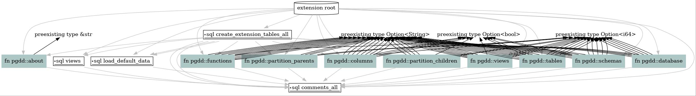

What is PgDD?
The PostgreSQL Data Dictionary (PgDD) makes it easy to write simple SQL
queries to learn about your database. PgDD is an in-database solution
providing introspection via standard SQL query syntax. The goal is a
usable data dictionary directly available to all users of a PostgreSQL database.
This extension does not provide anything you cannot get directly from the
internal Postgres catalog tables (e.g. pg_catalog.pg_class).
PgDD makes it easy to get to standard, default information most analysts,
developers, and even DBAs need to access from time to time.
Compatibility
PgDD has been tested to work for PostgreSQL 12 through 16.
This extension is built using the
pgrx framework. Postgres
version support is expected to provide 5 years of support, but is ultimately
determined by what pgrx supports.
Installers are provided for a small number of Debian / Ubuntu systems using the Docker build system documented under create-installer.md.
Why not use ______?
Why use PgDD when you could just use psql's slash commands (e.g. \d)
or directly query the tables/views in pg_catalog?
If those tools provide what you need, great! PgDD was created to provide database insights without requiring a specific tool. It also attempts to be easy for end users that are not DBAs.
See the Quick Start and the Query guide for next steps.
Quick Start
Install from binary
Binaries for supported Postgres versions are made available for each release. See the individual release from the releases page for the full list of binaries. This currently includes binaries for two main LTS supported OS's using the AMD64 architecture. The latest Ubuntu LTS (currently Jammy, 22.04) and the "PostGIS" image (currently Debian 11). The PostGIS image is provided to allow inclusion in the PgOSM Flex project's Docker image.
Download and install for PgDD 0.5.2 for Postgres 16 on Ubuntu 22.04.
wget https://github.com/rustprooflabs/pgdd/releases/download/0.5.2/pgdd_0.5.2_jammy_pg16_amd64.deb
sudo dpkg -i ./pgdd_0.5.2_jammy_pg16_amd64.deb
Create the extension in your database.
CREATE EXTENSION pgdd;
Database overview
SELECT * FROM dd.database;
┌─[ RECORD 1 ]────┬───────────┐
│ oid │ 2853066 │
│ db_name │ pgosm_dev │
│ db_size │ 2325 MB │
│ schema_count │ 16 │
│ table_count │ 107 │
│ size_in_tables │ 2294 MB │
│ view_count │ 27 │
│ size_in_views │ 11 MB │
│ extension_count │ 8 │
└─────────────────┴───────────┘
Views
Query dd.views within the dd schema (s_name) to see the other PgDD views
included.
SELECT s_name, v_name, description
FROM dd.views
WHERE s_name = 'dd'
;
┌────────┬────────────────────┬────────────────────────────────────────────────────────────────────────────────────────────────────┐
│ s_name │ v_name │ description │
╞════════╪════════════════════╪════════════════════════════════════════════════════════════════════════════════════════════════════╡
│ dd │ tables │ Data dictionary view: Lists tables, excluding system tables. │
│ dd │ schemas │ Data dictionary view: Lists schemas, excluding system schemas. │
│ dd │ views │ Data dictionary view: Lists views, excluding system views. │
│ dd │ columns │ Data dictionary view: Lists columns, excluding system columns. │
│ dd │ functions │ Data dictionary view: Lists functions, excluding system functions. │
│ dd │ partition_parents │ Data dictionary view: Lists parent partition tables with aggregate details about child partitions. │
│ dd │ partition_children │ Data dictionary view: Lists individual partitions (children) of partitioned tables. │
│ dd │ database │ Data dictionary view: Provides basic statistics for the current database. │
└────────┴────────────────────┴────────────────────────────────────────────────────────────────────────────────────────────────────┘
Query PgDD
See the Query PgDD section for more examples.
Query PgDD
Connect to your database using your favorite SQL client. This could be psql, DBeaver, PgAdmin, or Python code... all you need is a place to execute SQL code and see the results.
The main interaction with PgDD is through the views in the dd schema.
Database overview
SELECT * FROM dd.database;
┌─[ RECORD 1 ]────┬───────────┐
│ oid │ 2853066 │
│ db_name │ pgosm_dev │
│ db_size │ 2325 MB │
│ schema_count │ 16 │
│ table_count │ 107 │
│ size_in_tables │ 2294 MB │
│ view_count │ 27 │
│ size_in_views │ 11 MB │
│ extension_count │ 8 │
└─────────────────┴───────────┘
The dd.views query can be used to query the views within a database.
SELECT s_name, v_name, description
FROM dd.views
WHERE s_name = 'dd'
;
┌────────┬────────────────────┬────────────────────────────────────────────────────────────────────────────────────────────────────┐
│ s_name │ v_name │ description │
╞════════╪════════════════════╪════════════════════════════════════════════════════════════════════════════════════════════════════╡
│ dd │ tables │ Data dictionary view: Lists tables, excluding system tables. │
│ dd │ schemas │ Data dictionary view: Lists schemas, excluding system schemas. │
│ dd │ views │ Data dictionary view: Lists views, excluding system views. │
│ dd │ columns │ Data dictionary view: Lists columns, excluding system columns. │
│ dd │ functions │ Data dictionary view: Lists functions, excluding system functions. │
│ dd │ partition_parents │ Data dictionary view: Lists parent partition tables with aggregate details about child partitions. │
│ dd │ partition_children │ Data dictionary view: Lists individual partitions (children) of partitioned tables. │
│ dd │ database │ Data dictionary view: Provides basic statistics for the current database. │
└────────┴────────────────────┴────────────────────────────────────────────────────────────────────────────────────────────────────┘
PgDD views wrap around functions with the same name and enforce
WHERE NOT system_object. Query the functions to includesystem_objectresults. e.g.SELECT s_name, v_name FROM dd.views() WHERE system_object;
Schema
The highest level of querying provided by pgdd is at the schema level.
This provides counts of tables, views and functions along with the size on disk of the objects within the schema.
SELECT s_name, table_count, view_count, function_count,
size_plus_indexes, description
FROM dd.schemas
WHERE s_name = 'dd';
Yields results such as this.
┌─[ RECORD 1 ]──────┬────────────────────────────────────────────────────────────────────────────────┐
│ s_name │ dd │
│ table_count │ 3 │
│ view_count │ 5 │
│ function_count │ 6 │
│ size_plus_indexes │ 144 kB │
│ description │ Schema for Data Dictionary objects. See https://github.com/rustprooflabs/pgdd │
└───────────────────┴────────────────────────────────────────────────────────────────────────────────┘
Tables
The dd.tables view to examine tables created and populated by pgbench.
SELECT t_name, size_pretty, rows, bytes_per_row
FROM dd.tables
WHERE s_name = 'public'
AND t_name LIKE 'pgbench%'
ORDER BY size_bytes DESC;
┌──────────────────┬─────────────┬──────────┬───────────────┐
│ t_name │ size_pretty │ rows │ bytes_per_row │
╞══════════════════╪═════════════╪══════════╪═══════════════╡
│ pgbench_accounts │ 1281 MB │ 10000000 │ 134 │
│ pgbench_tellers │ 80 kB │ 1000 │ 82 │
│ pgbench_branches │ 40 kB │ 100 │ 410 │
│ pgbench_history │ 0 bytes │ 0 │ ¤ │
└──────────────────┴─────────────┴──────────┴───────────────┘
Columns
SELECT source_type, s_name, t_name, c_name, data_type
FROM dd.columns
WHERE data_type LIKE 'int%'
;
┌─────────────┬────────┬─────────────┬────────────────┬───────────┐
│ source_type │ s_name │ t_name │ c_name │ data_type │
╞═════════════╪════════╪═════════════╪════════════════╪═══════════╡
│ table │ dd │ meta_schema │ meta_schema_id │ int8 │
│ table │ dd │ meta_table │ meta_table_id │ int8 │
│ table │ dd │ meta_column │ meta_column_id │ int8 │
│ view │ dd │ schemas │ table_count │ int8 │
│ view │ dd │ schemas │ view_count │ int8 │
│ view │ dd │ schemas │ function_count │ int8 │
│ view │ dd │ schemas │ size_bytes │ int8 │
│ view │ dd │ tables │ size_bytes │ int8 │
│ view │ dd │ tables │ rows │ int8 │
│ view │ dd │ tables │ bytes_per_row │ int8 │
│ view │ dd │ views │ rows │ int8 │
│ view │ dd │ views │ size_bytes │ int8 │
│ view │ dd │ columns │ position │ int8 │
└─────────────┴────────┴─────────────┴────────────────┴───────────┘
Functions
SELECT s_name, f_name, argument_data_types, result_data_types
FROM dd.functions
;
Partitioned tables
There are two views, dd.partition_parents and dd.partition_children to provide
partition-focused details. Will display partitions for both
declarative partitions and inheritance based partitions
With the test data in this project for declarative partitions.
SELECT *
FROM dd.partition_parents
WHERE s_name = 'pgdd_test'
;
┌───────┬───────────┬────────┬────────────────┬────────────┬────────────┬─────────────┬────────────────────┬──────┬────────────────────┬───────────────────────────┬────────────────────┐
│ oid │ s_name │ t_name │ partition_type │ partitions │ size_bytes │ size_pretty │ size_per_partition │ rows │ rows_per_partition │ partitions_never_analyzed │ partitions_no_data │
╞═══════╪═══════════╪════════╪════════════════╪════════════╪════════════╪═════════════╪════════════════════╪══════╪════════════════════╪═══════════════════════════╪════════════════════╡
│ 25090 │ pgdd_test │ parent │ declarative │ 3 │ 40960 │ 40 kB │ 13 kB │ 15 │ 5 │ 0 │ 1 │
└───────┴───────────┴────────┴────────────────┴────────────┴────────────┴─────────────┴────────────────────┴──────┴────────────────────┴───────────────────────────┴────────────────────┘
Details for each child partition, including calculated percentages of the single partition against the totals for the parent partition.
SELECT *
FROM dd.partition_children
WHERE s_name = 'pgdd_test'
;
┌───────┬───────────┬─────────────┬────────────┬──────────────────┬──────┬────────────┬─────────────┬───────────────────┬───────────────┬───────────────────────────┬────────────────────────────┐
│ oid │ s_name │ t_name │ parent_oid │ parent_name │ rows │ size_bytes │ size_pretty │ size_plus_indexes │ bytes_per_row │ percent_of_partition_rows │ percent_of_partition_bytes │
╞═══════╪═══════════╪═════════════╪════════════╪══════════════════╪══════╪════════════╪═════════════╪═══════════════════╪═══════════════╪═══════════════════════════╪════════════════════════════╡
│ 25095 │ pgdd_test │ child_0_10 │ 25090 │ pgdd_test.parent │ 9 │ 16384 │ 16 kB │ 32 kB │ 1820 │ 0.6000 │ 0.4000 │
│ 25109 │ pgdd_test │ child_20_30 │ 25090 │ pgdd_test.parent │ 0 │ 8192 │ 8192 bytes │ 16 kB │ ¤ │ 0.0000 │ 0.2000 │
│ 25102 │ pgdd_test │ child_10_20 │ 25090 │ pgdd_test.parent │ 6 │ 16384 │ 16 kB │ 32 kB │ 2731 │ 0.4000 │ 0.4000 │
└───────┴───────────┴─────────────┴────────────┴──────────────────┴──────┴────────────┴─────────────┴───────────────────┴───────────────┴───────────────────────────┴────────────────────────────┘
Permissions for PgDD
Create Read-only group role to assign to users that need access to query (read-only) the PgDD objects.
CREATE ROLE dd_read WITH NOLOGIN;
COMMENT ON ROLE dd_read IS 'Group role to grant read-only permissions to PgDD views.';
GRANT USAGE ON SCHEMA dd TO dd_read;
GRANT SELECT ON ALL TABLES IN SCHEMA dd TO dd_read;
ALTER DEFAULT PRIVILEGES IN SCHEMA dd GRANT SELECT ON TABLES TO dd_read;
Access can now be granted to other users using:
GRANT dd_read TO <your_login_user>;
For read-write access.
CREATE ROLE dd_readwrite WITH NOLOGIN;
COMMENT ON ROLE dd_readwrite IS 'Group role to grant write permissions to PgDD objects.';
GRANT dd_read TO dd_readwrite;
GRANT INSERT, UPDATE, DELETE ON ALL TABLES IN SCHEMA dd TO dd_readwrite;
ALTER DEFAULT PRIVILEGES IN SCHEMA dd GRANT INSERT, UPDATE, DELETE ON TABLES TO dd_readwrite;
This access can be granted using:
GRANT dd_readwrite TO <your_login_user>;
Upgrade PgDD
Upgrading PgDD versions currently requires DROP/CREATE to upgrade.
This will not change until
pgrx #121 is resolved.
The first thing to do is check if you have data stored in the dd.meta_*
tables. Run the following query, if all three (3) rows return row_count = 0
you can simply drop and recreate the extension.
SELECT 'meta_table' AS src, COUNT(*) AS row_count
FROM dd.meta_table
WHERE s_name <> 'dd'
UNION
SELECT 'meta_column' AS src, COUNT(*) AS row_count
FROM dd.meta_column
WHERE s_name <> 'dd'
UNION
SELECT 'meta_schema' AS src, COUNT(*) AS row_count
FROM dd.meta_schema
WHERE s_name <> 'dd'
;
To drop and recreate the extension, run the following queries.
DROP EXTENSION pgdd;
CREATE EXTENSION pgdd;
Upgrade with data in dd tables
If custom attributes are stored in the dd tables you will need to use
pg_dump to export the data and reload after recreating the extension
with pgrx. If any of the three (3) queries below return a count > 0
this applies to you.
Dump data from dd tables
Set the target database name in the $DB_NAME variable for later commands
to use.
export DB_NAME=pgosm_dev
Run pg_dump against the target database, drop and create the extension,
and reload the data to the dd.meta_* tables.
pg_dump -d $DB_NAME \
--schema dd --data-only \
-f ~/tmp/dd_upgrade_data.sql
psql -d $DB_NAME -c "DROP EXTENSION pgdd; CREATE EXTENSION pgdd;"
psql -d $DB_NAME -f ~/tmp/dd_upgrade_data.sql
Create Installer
This page covers two methods that can be used to build binary installers for PgDD. This documents how the pre-built binaries are provided for each versions and explains how end users can extend this to their operating systems and architectures.
The two methods that can be used to build binaries are the Docker build system
and manually installing and using pgrx.
PgDD's installers are specific to three (3) details:
- CPU Architecture
- Operating System version
- Postgres version
Architecture supported
Project maintainers currently only provide pre-built installers for the AMD architecture. This matches the hardware easily available.
Operating Systems Supported
Pre-built binaries are provided for recent operating systems, typically ones in Long Term Support (LTS). Currently building for:
- Ubuntu 23.04
- Ubuntu 22.04
- Debian 11 (named PostGIS internally)
Docker Build System
The Docker build method uses OS specific Dockerfile to provide one binary
installer for each supported Postgres version. The CPU architecture it is
built for matches the hardware building the installer.
The Docker build system is the best approach to use when the appropriate
Dockerfile already exists.
The Docker build method was originally based on ZomboDB's build system.
To generate the full suite of binaries change into the ./build directory
and run build.sh. This currently creates 15 total binary installers for
3 different OSs (Postgres 12 - 16).
cd build/
time bash ./build.sh
Individual installers can be found under ./target/artifacts. A package of
all installers is saved to ./build/pgdd-binaries.tar.gz.
Tagged versions of PgDD include LTS OS binaries with their release notes.
Customize Docker Build system
The Docker build system can be adjusted locally to build a binary for a specific Postgres version and/or specific OS.
The ./build/build.sh script has the logic to be adjusted to control this.
The Postgres versions can be altered manually by commenting out the line
with all versions and uncommenting the line with a specific Postgres version.
The two lines in the script are shown below.
PG_VERS=("pg13" "pg14" "pg15" "pg16" "pg17")
#PG_VERS=("pg16")
To only build for Postgres on a single OS, add a grep <osname> command to the
loop logic. The original file that runs for all OSs with Dockerfiles looks like
the following line.
for image in `ls docker/ ` ; do
To build for only lunar (Ubuntu 23.04) add | grep lunar as shown in the
following example.
for image in `ls docker/ | grep lunar ` ; do
Operating Systems supported
Pull requests are welcome for new Dockerfiles to add support for additional operating
systems. These PRs should operate in a similar manner (where possible) to
existing Dockerfile for easiest maintenance.
Create Binary Installer w/out Docker
The following steps walk through creating a package on a typical
Ubuntu based system with Postgres 15. These manual instructions can be used
when you do not want to use the Docker based build system under ./build/.
Prerequisites
The main perquisites for PgDD are pgrx and its dependencies.
Install prereqs and ensure PostgreSQL dev tools are installed.
See the cargo pgrx documentation for more information on using
pgrx.
sudo apt install postgresql-server-dev-all libreadline-dev zlib1g-dev curl \
libssl-dev llvm-dev libclang-dev clang \
graphviz
Install Rust and pgrx.
curl https://sh.rustup.rs -sSf | sh -s -- -y
source $HOME/.cargo/env
Install cargo-pgrx regularly (see dev steps below for non-standard install).
cargo install --locked cargo-pgrx
Install cargo-deb used for packaging binaries.
cargo install cargo-deb
Initialize pgrx. Need to run this after install AND occasionally to get updates
to Postgres versions or glibc updates. Not typically required to follow pgrx
developments.
cargo pgrx init
The fpm step requires the fpm Ruby gem.
sudo apt install ruby-rubygems
sudo gem i fpm
Of course, the PgDD project itself is required.
mkdir ~/git
cd ~/git
git clone https://github.com/rustprooflabs/pgdd.git
cd ~/git/pgdd
Create package
Timing note:
cargo pgrx packagetakes ~ 2 minutes on my main dev machine.
cargo pgrx package --pg-config /usr/lib/postgresql/15/bin/pg_config
cd target/release/pgdd-pg15/
find ./ -name "*.so" -exec strip {} \;
OUTFILE=pgdd.deb
rm ${OUTFILE} || true
fpm \
-s dir \
-t deb -n pgdd \
-v 0.5.0 \
--deb-no-default-config-files \
-p ${OUTFILE} \
-a amd64 \
.
sudo dpkg -i --force-overwrite ./pgdd.deb
pgrx Generate graphviz
cargo pgrx schema -d pgdd.dot
dot -Goverlap=prism -Gspline=ortho -Tjpg pgdd.dot > docs/src/pgdd.jpg

Non-standard dev
When working against pgrx installed from a non-tagged branch, install pgrx using:
cargo install --locked --force --git "https://github.com/tcdi/pgrx" \
--branch "develop" \
"cargo-pgrx"
The following command can be used to force pgrx to overwrite the configs it needs to for various dev related changes.
Clean things out.
cargo clean
If you're doing the above, you probably should remove the Cargo.lock
file while you're at it. The more cautious may want to move it aside for a backup.
rm Cargo.lock
Force build the schema.
cargo pgrx schema -f
Non-standard In Docker
If testing this extension against non-standard pgrx install, update the Dockerfile to install from the specific branch.
Change
RUN /bin/bash rustup.sh -y \
&& cargo install --locked cargo-pgrx
To
RUN /bin/bash rustup.sh -y \
&& cargo install --locked --force --git "https://github.com/tcdi/pgrx" \
--branch "develop" \
"cargo-pgrx"
Developer Notes
Drop/recreate for upgrade
If pgrx #121
is resolved, the need to DROP EXTENSION pgdd; CREATE EXTENSION pgdd; would
go away. In that case, we need to be aware of
the need to adjust for DDL changes made in src/lib.rs in version-to-version upgrade (e.g. sql/pgdd-0.3.1--0.4.0.sql).
Those scenarios may need review depending on if pgrx #120 is also resolved or not.
As it stands, drop/create is the upgrade path.